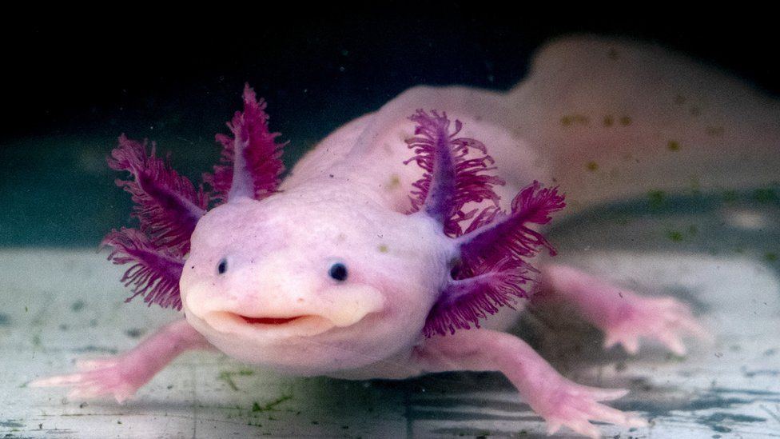
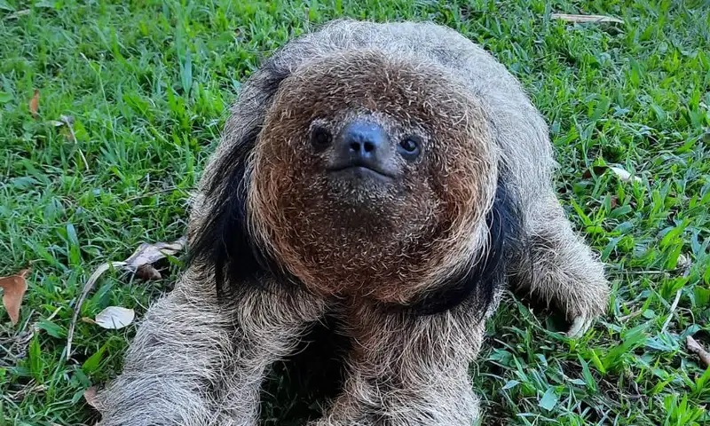

O Axolote, ao contrário do que muitos pensam, é uma espécie de Salamandra, e não de peixe. Uma das curiosidades sobre o Axolote é que, por ser uma salamandra, quando posto em situações de grave perigo em seu habitat natural, o Axolote pode se adaptar para a vida terrestre e assim perder seus atributos que o fazem viver na água, o que o deixa muito mais parecido com uma salamandra terrestre. Além disso, os Axolotes possuem uma capacidade regenerativa incrível, podendo até mesmo regenerar membros inteiros do seu corpo.

Os Folivora, ou popularmente conhecidos como Bicho-Preguiça são mamíferos que são animais inofensivos encontrados apenas na América do Sul e Central. Os Bicho-Preguiça fazem parte do mesmo grupo que os tamanduás e possuem articulações extras. Uma curiosidade sobre o Bicho-Preguiça é que, mesmo dormindo em média 20 horas por dia e comumente viver escalando árvores, as preguiças são excelentes nadadores e nadam muito melhor que outros animais. Outra curiosidade é que, no passado, há cerca de 12 mil anos, existiram Bichos-Preguiça de até 3 metros de altura.